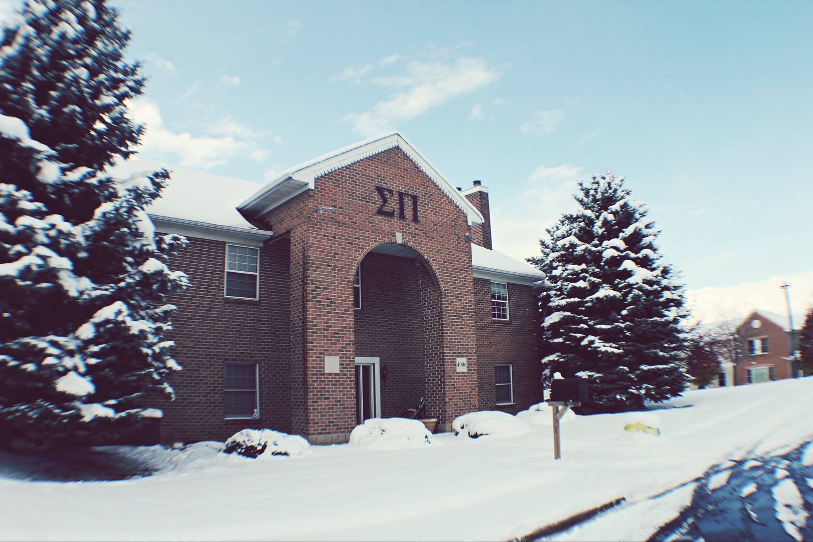

Theta Rho Chapter
By joining Sigma Pi Fraternity, you will encounter a social experience unlike anything else. It is nothing short of amazing and will stay with you for a lifetime. Sigma Pi will become your home away from home, help you develop your academic and professional career and become an outlet to get involved on campus. It's more than just an organization; it's a family.
Being a member of Sigma Pi automatically gives you the distinction of being different. Not one individual brother is the same, but the brotherhood between them is shared strongly. Their Fraternity desires those wishing to become leaders within their community. They believe in Brotherhood, the advancement of Truth and Justice, the promotion of Scholarship, the encouragement of Chivalry, the diffusion of Culture, and the development of Character. They strive to make good men great and leave a long lasting impression on every member's life.
Progress, man's distinctive mark alone,
Not God's, and not the beasts',
God is, they are.
Man partly is and wholly hopes to be.